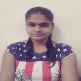

| 
| Pooja Nivrutti Borade
At Post Madakijamb,Dindori,Nashik
+918552904808
prborade27@gmail.com |
| EDUCATION
|
- Janta English School Of & Junior College Dindori,Nashik
HSC
70.77
2016 |
- Janta English School Of & Junior College Dindori,Nashik
SSC
85.80
2014 |
TECHNICAL SKILLS
- Basic c
- Oops concept
- HTML,CSS
- Python
|
PROJECTS
- Water Wending Machine
- Autonomous Car
|
ACHIEVEMENT & AWARDS
- Winner of intercollege match competition in cricket
- co-ordinator of NSS
|
ACTIVITIES
- In khopdewadi village and constructed three dam in different village.
- Actively participated in social activities like cleanliness drive,blood donation.
- Perform streetplay to bring small transformation in the society.
|
PERSONAL STRENGTHS
- Hardworking
- Honesty
- Consistent
|
PERSONAL PROFILE
- Date of Birth : 27/04/1998
- Marital Status :Single
- Nationality :Indian
- Known Language :English,Hindi,Marathi
- Hobby :Dancing,Playing cricket,Travelling,Trekking
- Passport :yes
|